污水处理厂解决方案 ↗
规模匹配 · 提标改造 · 运行稳定性
官网产品栏目展示一体化污水处理设备，涵盖箱体式及筒体式设备等产品图片。工艺选型仍需结合原水水质、处理规模与排放要求。

| 评估项目 | 参数或确认事项 |
|---|---|
| 处理量（m³/d） | 〔待确认：污水处理设备 处理量（m³/d）〕 |
| 工艺类型 | 〔待确认：污水处理设备 工艺类型〕 |
| 进出水指标（mg/L） | 〔待确认：污水处理设备 进出水指标（mg/L）〕 |
| 尺寸（mm）与材质 | 〔待确认：污水处理设备 尺寸（mm）与材质〕 |
| 装机功率（kW） | 〔待确认：污水处理设备 装机功率（kW）〕 |
| 运行方式 | 〔待确认：污水处理设备 运行方式〕 |
规模匹配 · 提标改造 · 运行稳定性
分散站点 · 低温运行 · 尾水利用
高有机负荷 · 油脂分离 · 生产波动
分类收集 · 消毒控制 · 污泥管理
纳管条件 · 分类处理 · 改造衔接
先提供水质报告和排放目标，再核对场地、负荷变化与运维资源。
官网已公开设备外观和工程应用图片。〔待确认：对应型号、材质、处理能力、工艺配置及供货范围〕
〔待确认：该类产品在现有项目中的实际供货范围及可公开案例〕
查看已有项目资料以下图片按官网原有产品分类整理，点击图片可查看大图。具体型号、配置和性能以确认后的产品资料为准。


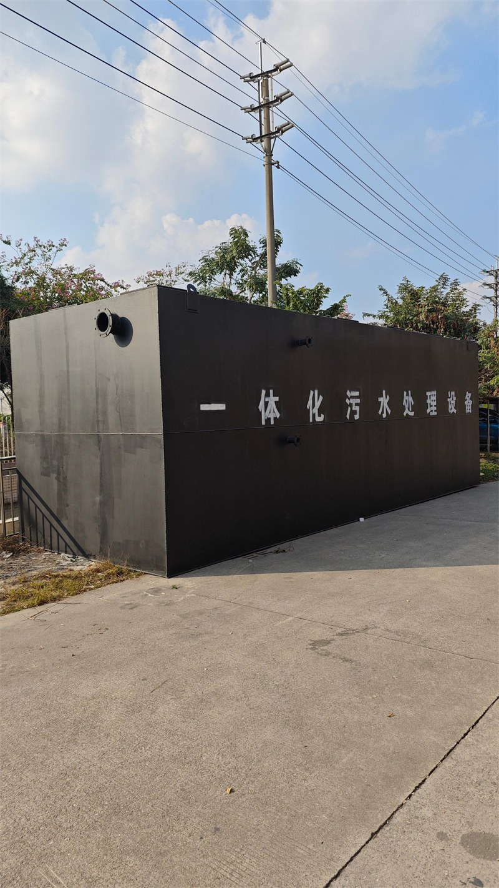

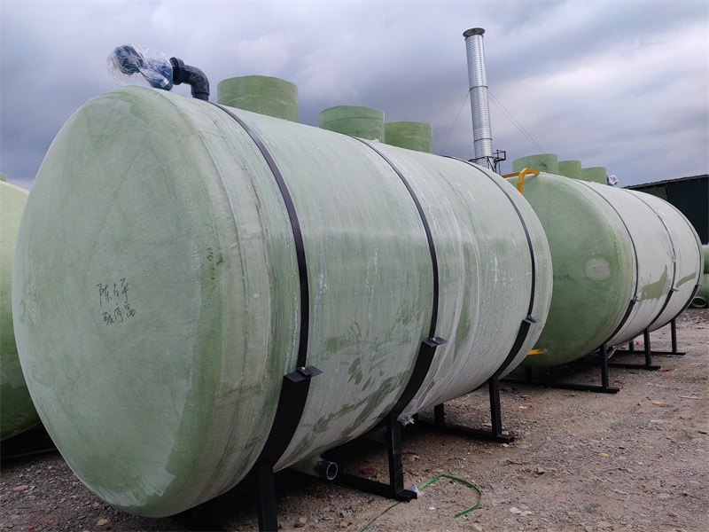


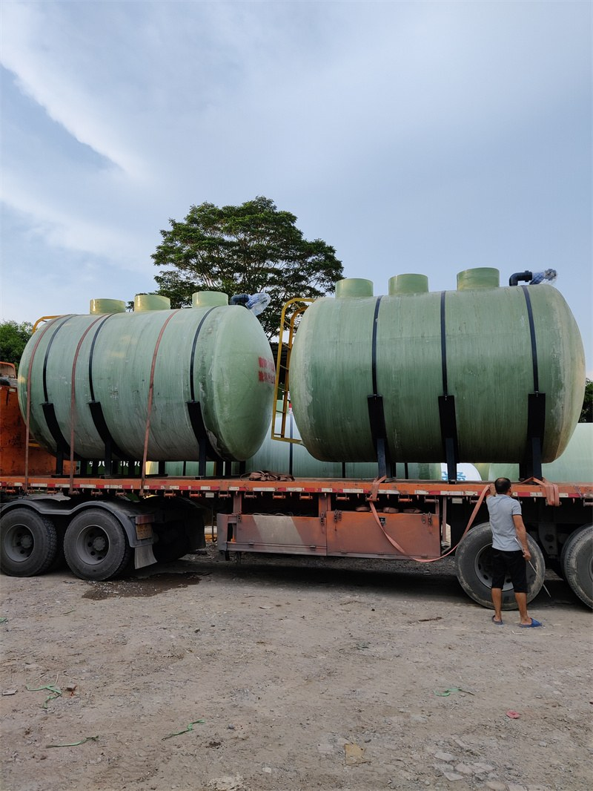
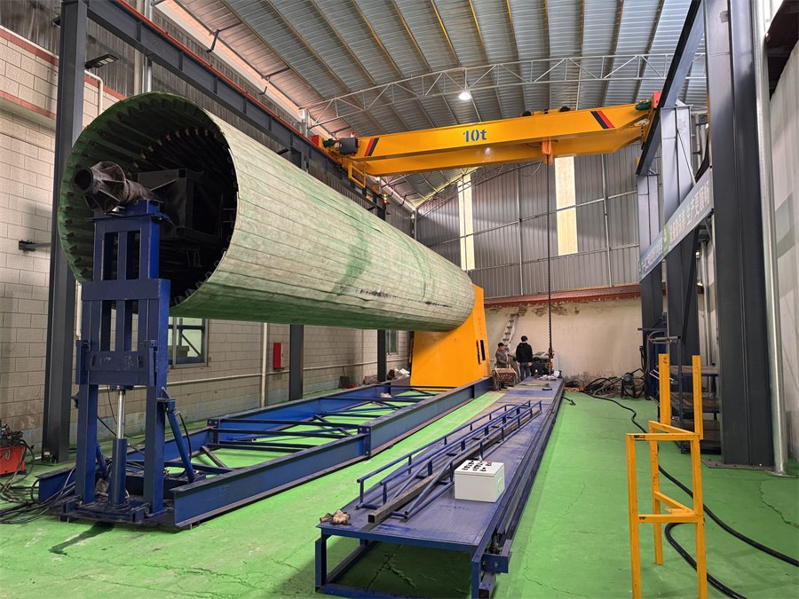


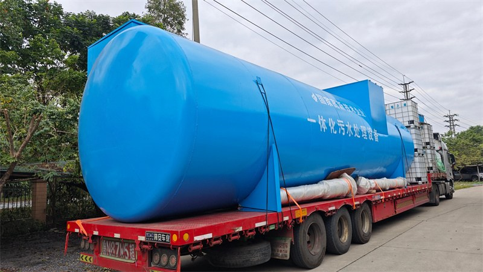


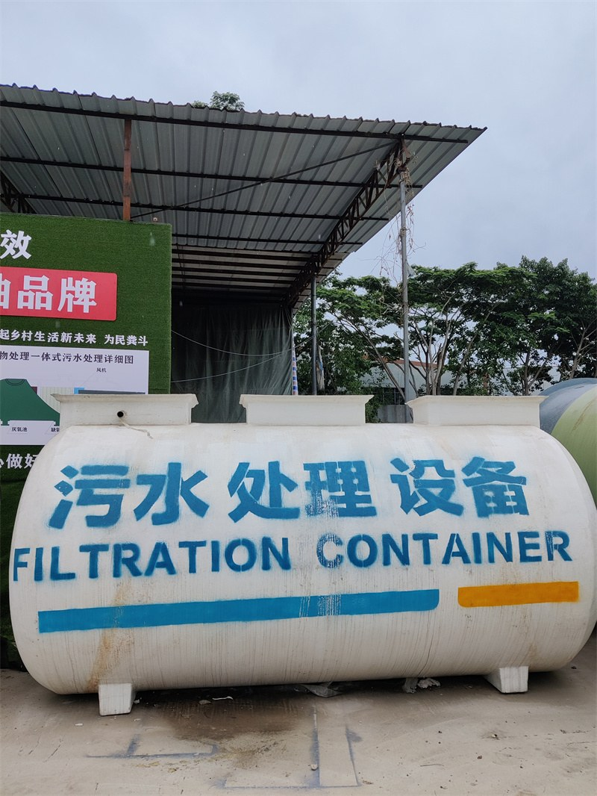
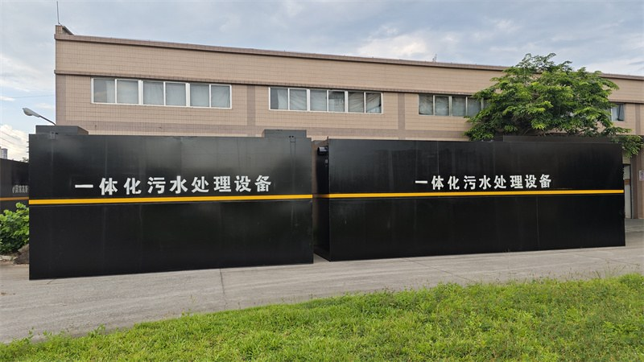
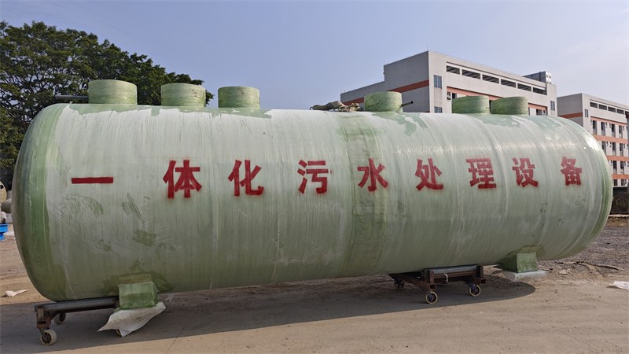

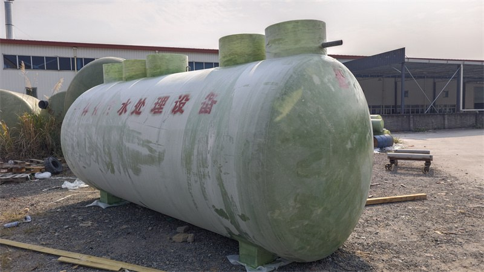
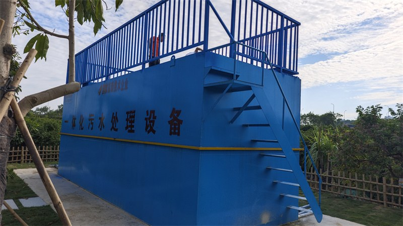
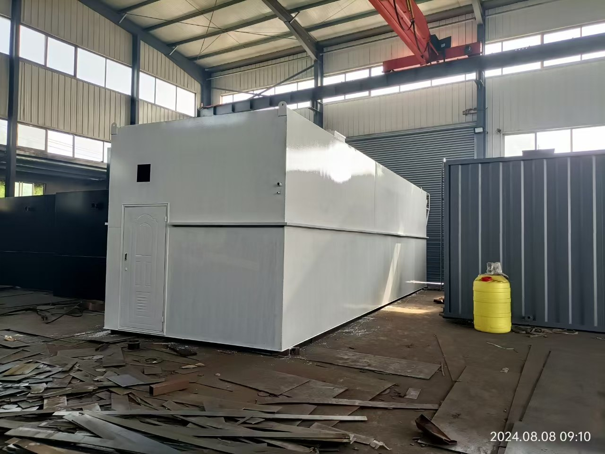
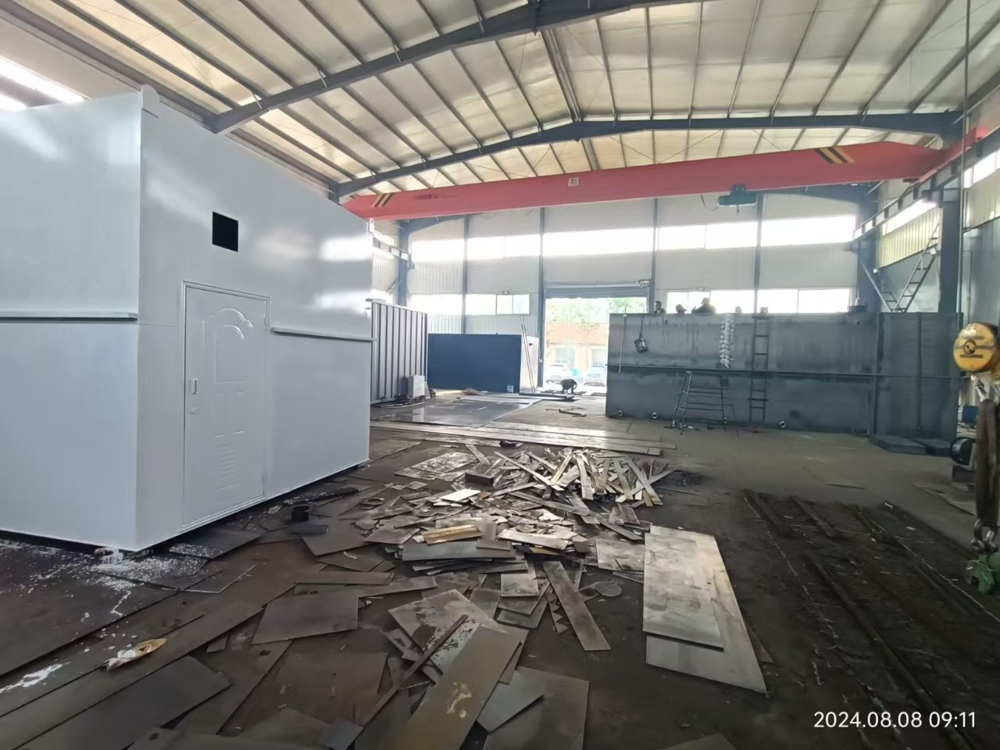

留下项目类型、规模和联系方式，便于进一步核对技术需求。
本页为效果预览，表单暂未开放。